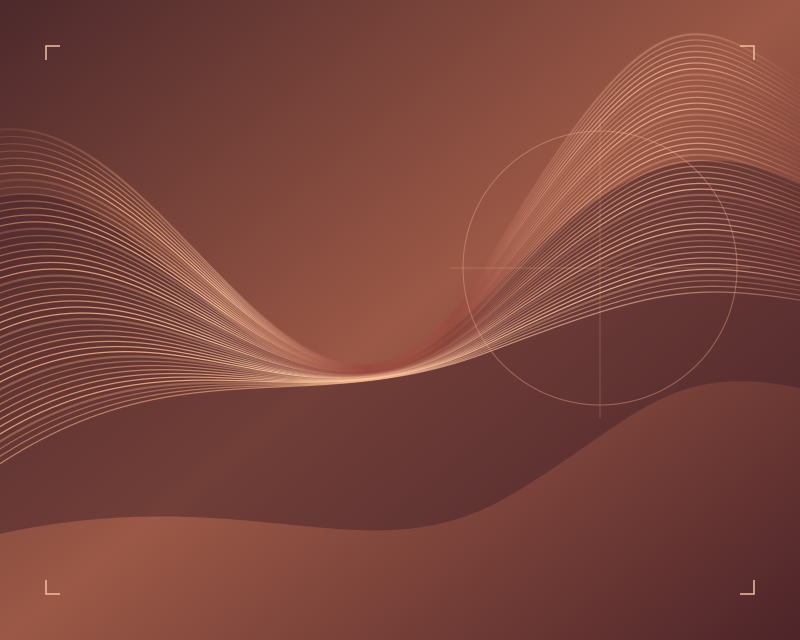

Saúde da pele
Converse sobre a sua rotina e sobre mudanças que passaram a incomodar.
Saúde da pele e tricologia · Goiânia
Saúde da pele, tricologia e estética em uma mesma conversa.
Conhecer a consulta
Converse sobre a sua rotina e sobre mudanças que passaram a incomodar.
Leve suas dúvidas sobre couro cabeludo, queda e mudanças nos fios.
Discuta objetivos, alternativas e os limites de cada abordagem.
Médica em Goiânia. O perfil profissional reúne conteúdos sobre saúde da pele, tricologia e estética.
CRM-GO 34600
Conte quando percebeu a mudança e o que você já testou.
Compartilhe a rotina de pele e cabelo e, se tiver, leve registros anteriores.
Organize com a médica os próximos passos e os pontos de acompanhamento.
Abra o canal do consultório para confirmar unidade, formato de atendimento e horários.
Confirme com a equipe como organizar seus motivos de consulta no momento do agendamento.
Uma lista ou fotos dos rótulos pode ajudar na conversa sobre a sua rotina.
Abra o mapa e confirme a unidade indicada pela equipe.